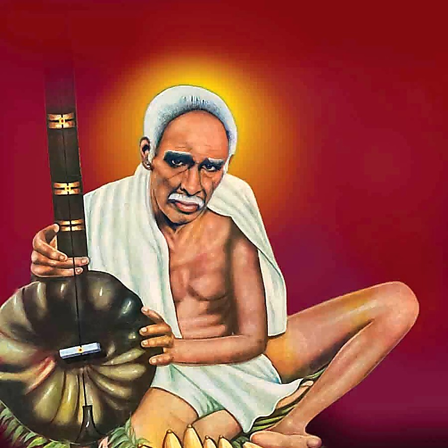

Om Narayana Adi Narayanaఓం నారాయణ ఆది నారాయణ
Bhagavan Sri Venkaiah Swamyభగవాన్ శ్రీ వెంకయ్య స్వామి
The Avadhuta saint of Nellore, revered by devotees as an incarnation of Lord Dattatreya. Welcome to the temple at Sullurupeta. నెల్లూరు ప్రాంత అవధూత, శ్రీ దత్తాత్రేయ స్వామి అవతారంగా భక్తులు కొలిచే మహనీయుడు. సూళ్లూరుపేటలోని ఆలయానికి స్వాగతం.
Sponsor a Saturday annadanamఒక శనివారం అన్నదానానికి స్పాన్సర్ అవ్వండి
Every Saturday the temple feeds every devotee who comes, just as Swamy shared whatever he received. Offer one Saturday in your family's name. స్వామి తనకు వచ్చినది అందరితో పంచుకున్నట్లే, ప్రతి శనివారం ఆలయం వచ్చిన ప్రతి భక్తునికి భోజనం పెడుతుంది. మీ కుటుంబం పేరున ఒక శనివారాన్ని సమర్పించండి.
Become a sponsorస్పాన్సర్ అవ్వండిUpcoming eventsరాబోయే కార్యక్రమాలు
Life Storyజీవిత చరిత్ర
From Nagula Vellaturu to Golagamudi: the journey of the saint.నాగులవెల్లటూరు నుండి గొలగమూడి వరకు: స్వామివారి జీవిత యాత్ర.
Teachingsబోధనలు
Simple sayings on dharma, equality, love and remembrance of God.ధర్మం, సమానత్వం, ప్రేమ, భగవన్నామ స్మరణపై సరళమైన సూక్తులు.
Templeఆలయం
Darshan timings, festivals, how to reach Sullurupeta.దర్శన సమయాలు, ఉత్సవాలు, సూళ్లూరుపేటకు ఎలా చేరుకోవాలి.
Swamy's Messagesస్వామి సందేశాలు
Messages and reflections shared by the temple, in Telugu and English.ఆలయం పంచుకునే సందేశాలు, భావనలు; తెలుగు, ఇంగ్లీషులో.
YouTube channelయూట్యూబ్ ఛానల్
Live poojas, bhajans and Aradhana videos from the temple.ఆలయం నుండి ప్రత్యక్ష పూజలు, భజనలు, ఆరాధన వీడియోలు.
Donate & Contactవిరాళాలు & సంప్రదింపు
Support annadanam and temple seva. Reach the temple office.అన్నదానం, ఆలయ సేవలకు తోడ్పడండి. ఆలయ కార్యాలయాన్ని సంప్రదించండి.
About the templeఆలయం గురించి
Sri Venkaiah Swamy Temple at Sullurupeta was built by devotees so that the grace of Swamy is available close to home. Daily poojas, bhajans and annadanam are carried out here in the same spirit of simplicity and equality that Swamy lived by. స్వామివారి కృప ఇంటికి దగ్గరగా లభించాలనే భావనతో భక్తులు సూళ్లూరుపేటలో శ్రీ వెంకయ్య స్వామి ఆలయాన్ని నిర్మించారు. స్వామివారు జీవించిన సరళత, సమానత్వ భావంతోనే ఇక్కడ నిత్య పూజలు, భజనలు, అన్నదానం జరుగుతాయి.
TODO: add the temple's founding year, who built it, and a short history here (both languages).